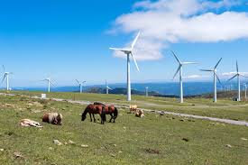

¿Qué es la Energía Eólica?
La energía eólica convierte la fuerza del viento en electricidad mediante aerogeneradores. En zonas costeras como el Chocó, los vientos constantes permiten su uso sin alterar ecosistemas, ofreciendo una fuente de energía limpia y renovable durante todo el año.
Comunidades rurales pueden beneficiarse con turbinas medianas para electrificar hogares, escuelas y centros de salud. Incluso, en algunos proyectos comunitarios, se han instalado sistemas híbridos que combinan turbinas eólicas y paneles solares, asegurando electricidad continua.
Su implementación no requiere grandes extensiones de tierra y es compatible con otras actividades productivas, lo que la convierte en una opción versátil y sostenible.
Ventajas de la Energía Eólica
- Recurso limpio, ilimitado y renovable, disponible en muchas regiones del mundo.
- No produce emisiones ni residuos, contribuyendo a reducir la huella de carbono global.
- Reduce el uso de combustibles fósiles y la dependencia energética del petróleo.
- Compatible con la agricultura y pesca, sin interferir en las actividades locales.
- Genera empleo local en instalación, mantenimiento y gestión de parques eólicos.
- Ideal para zonas sin red eléctrica, garantizando acceso a energía confiable.
- Bajo costo operativo una vez instalados los equipos, lo que permite tarifas más bajas a largo plazo.
Tecnología Utilizada
Las turbinas en el Chocó deben resistir humedad, salinidad y lluvias constantes. Por eso, se utilizan aerogeneradores de eje horizontal con aspas fabricadas en materiales compuestos resistentes a la corrosión, así como torres galvanizadas que soportan condiciones climáticas extremas.
Los modelos modulares y portátiles permiten electrificar comunidades pequeñas y pueden combinarse con paneles solares para generar energía las 24 horas del día. Además, los sistemas de control inteligente permiten orientar las aspas según la dirección y velocidad del viento, optimizando el rendimiento.
La innovación en baterías de almacenamiento también juega un papel clave, asegurando que la electricidad generada pueda ser utilizada incluso cuando el viento no sopla.
Impacto Ambiental
Es una opción de bajo impacto ecológico que no afecta ríos, no requiere deforestación y no emite contaminantes atmosféricos. Se implementa en zonas despejadas sin dañar la biodiversidad ni alterar el equilibrio natural.
Es clave ubicar aerogeneradores con estudios que protejan aves migratorias y especies endémicas. La correcta planificación evita conflictos con fauna y asegura que el impacto visual y sonoro sea mínimo para las comunidades cercanas.
A nivel global, la energía eólica contribuye a disminuir las emisiones de gases de efecto invernadero, apoyando los compromisos climáticos internacionales.
¿Por qué Elegir Energía Eólica en el Chocó?
El Chocó necesita energía autónoma por su geografía y aislamiento en algunas zonas. La eólica es económica, limpia y fortalece la soberanía energética local, evitando la dependencia de combustibles que deben ser transportados desde largas distancias.
Reducir el uso de diésel y empoderar a las comunidades es parte de una transición energética justa e inclusiva. Además, fomenta el desarrollo de capacidades técnicas locales y abre oportunidades de negocio en mantenimiento y operación de equipos.
Adoptar la energía eólica es invertir en un futuro sostenible, donde el progreso no esté reñido con el cuidado del medio ambiente.